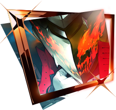

Persona 5 Royal significantly expands and refines the battle system from the original Persona 5, introducing new mechanics, rebalanced systems, and additional layers of strategy that make combat smoother and more dynamic. While the core turn-based structure and “One More” system remain intact, nearly every aspect of fighting—ranging from how you attack to how you coordinate with teammates—has been enhanced. These upgrades not only make battles feel faster and more responsive but also open up new tactical options for both newcomers and veterans.
One of the most noticeable changes is the introduction of Showtime attacks, flashy cinematic combo moves that involve two party members teaming up for a devastating strike. These attacks trigger under specific conditions, often when allies are in high spirits or during tense moments in battle, and each pair has its own unique animation and dialogue. Showtime attacks add personality and flair to combat, emphasizing the strong bonds between the Phantom Thieves while also providing a powerful way to finish off tough enemies without relying solely on All-Out Attacks or critical hits.
Royal also introduces third-tier Persona evolutions for each party member, expanding character growth beyond what was available in the base game. After completing certain confidant events and progressing into the new semester, each Phantom Thief’s Persona evolves once more, unlocking new abilities and stat boosts that enhance their combat roles. This extra level of progression gives players more incentive to invest in their party’s relationships and creates stronger endgame builds, making battles in the later stages more varied and rewarding.
Several mechanical adjustments make everyday encounters more strategic. Ammunition for guns now refills after every battle, eliminating the need to conserve bullets across an entire Palace and making gun attacks a more viable part of regular strategy. The Baton Pass system—which lets players chain turns between characters after exploiting enemy weaknesses—has also been expanded. Now, every party member can unlock Baton Pass, and leveling it up through new mini-games like darts increases its effectiveness, granting HP/SP recovery and damage bonuses with each pass. These changes make teamwork and turn management far more dynamic than before.
Finally, Persona 5 Royal adds new enemy types, boss mechanics, and dungeon combat encounters that encourage players to experiment with all these tools. Some bosses have revised phases or new gimmicks that require creative use of Showtimes and Baton Pass chains. The new collectible Will Seeds hidden in each Palace often trigger miniboss fights, rewarding exploration with unique accessories that enhance abilities. Combined with improved balance, smoother menus, and visual refinements, the result is a combat system that feels faster, flashier, and more strategic than in the original. Royal transforms every fight into a more engaging experience—less about grinding and more about clever, stylish execution.
